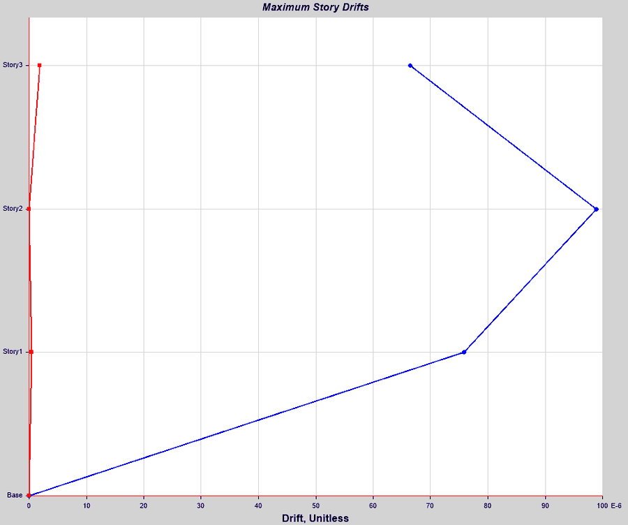
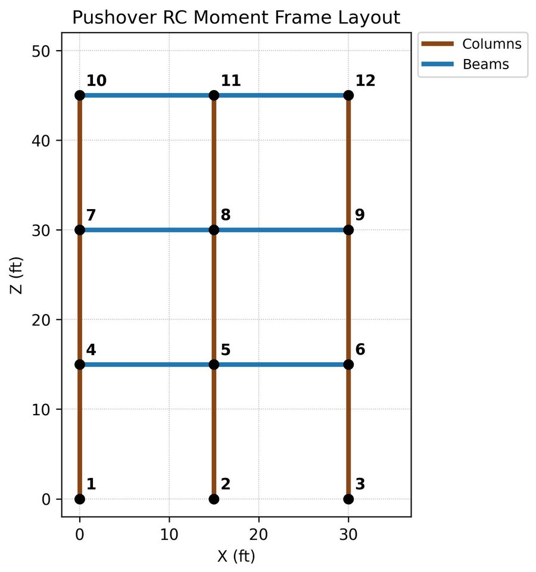

Seismic design and pushover analysis of a 3-story RC moment frame
For this project I designed a three-story reinforced concrete building with special moment frames in both directions. The plan is 30 ft by 30 ft with 15 ft bays, and each story is 15 ft tall. I designed it in ETABS for a Louisiana site using the equivalent lateral force procedure in ASCE 7-22, and checked the ACI 318-19 rules for special moment frames, including strong-column weak-beam, minimum reinforcement and confinement.
Louisiana has low seismic demand, so the design forces were small. The design base shear from ETABS was 12.37 kips, the first two modes were at 0.425 s (one in each direction), and the elastic story drifts were under 0.01%. The member sizes ended up being set by gravity loads and minimum special moment frame dimensions more than by the earthquake loads.

| Design data | |
|---|---|
| Materials | f'c = 4,000 psi, Grade 60 steel |
| Loads | Superimposed dead 45 psf, live 40 psf |
| Seismic | SDS = 0.13g, SD1 = 0.05g, SDC B, R = 8, Ω0 = 3, Cd = 5.5 |
| Columns | 24 x 24 in, 8-#8 bars |
| Beams | 12 x 24 in, 3-#8 top and bottom |
| Slab | 8 in, rigid diaphragm |
I wanted to see how much the frame could really take, so I built a 2D model of one frame line in OpenSees. The columns were fiber sections with confined core concrete, unconfined cover and P-delta effects, and the beams were kept elastic. I applied the gravity load first and then pushed the frame with a 1:2:3 lateral load pattern under displacement control at the roof.

The frame reached a peak base shear of about 172 kips at around 4 in of roof displacement and then lost strength slowly. At 7% maximum interstory drift it was still carrying about 125 kips. At the drift levels used for Immediate Occupancy, Life Safety and Collapse Prevention (1%, 2% and 4%), the base shear was about 170, 160 and 143 kips.
The study has limits. The model is 2D, the beams are elastic so all the nonlinearity is in the columns, the loading is monotonic, and joint shear and bond-slip are not modeled.
Other figures




